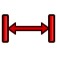
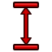

Проєкт LEGO-чоловічок. Етап 2: Тулуб
Продовжуємо проєкт: після голови моделюємо тулуб LEGO-чоловічка.
Що навчимося: малювати фігуру ламаною, робити деталь порожнистою інструментом «Товщина» і вирізати отвори одразу з двох боків.
Відео
🎬 Відео скоро з'явиться
Кроки
1. Тулуб
- Відкрийте FreeCAD, виберіть
 Параметричне тіло, потім
Параметричне тіло, потім  Новий ескіз і площину XZ.
Новий ескіз і площину XZ. - Інструментом Ламана намалюйте трапецію: почніть на червоній осі X, низ і верх малюйте рівно горизонтально, останню точку з'єднайте з першою.
- Затисніть Ctrl, виділіть два нижні кути та зелену вісь і застосуйте симетрію. Так само зробіть для двох верхніх кутів.
- Задайте розміри: низ

15,44 мм, верх 11,36 мм, висота
12,72 мм. Ескіз має стати зеленим. Вийдіть з ескізу.  Видавлювання на 7,85 мм з галочкою «Симетрично до площини».
Видавлювання на 7,85 мм з галочкою «Симетрично до площини».- Поверніть модель низом до себе, виділіть нижню грань і застосуйте
 Товщину 1,5 мм з галочкою «Зробити товщину всередину». Тулуб стане порожнистим.
Товщину 1,5 мм з галочкою «Зробити товщину всередину». Тулуб стане порожнистим.
2. Шия
- На верхній грані створіть ескіз з
 колом у точці початку координат, діаметр 4,8 мм.
колом у точці початку координат, діаметр 4,8 мм. - Видавлювання на 5,7 мм.
3. Отвори для рук
- Створіть Новий ескіз на площині YZ. Намалюйте коло з центром на зеленій осі, діаметр 4 мм, висота центра над віссю X 7,23 мм.
- Виріз: тип «Через усе» і галочка «Симетрично до площини». Отвори з'являться одразу з обох боків.
4. Заокруглення і здача
- Виділіть 4 ребра навколо верхньої грані (плечі) і застосуйте
 Заокруглення 0,75 мм.
Заокруглення 0,75 мм. - Збережіть файл:
 Файл → Зберегти як…
Файл → Зберегти як… - 📤 Надішліть файл з роботою в Google Classroom.
Завдання. Змоделюйте тулуб LEGO-чоловічка і збережіть файл з назвою
Lego Тулуб Прізвище Клас.FCStd
📤 Надішліть файл з роботою в Google Classroom.
Позначка зберігається в цьому браузері